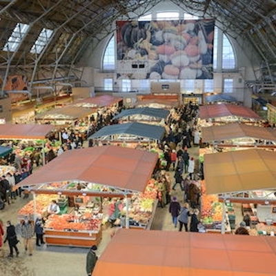
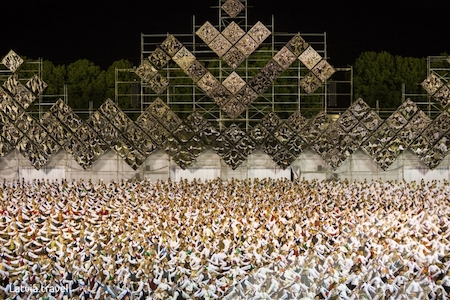
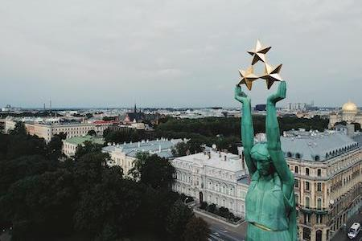
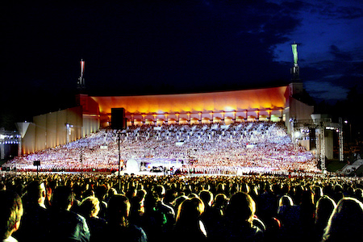
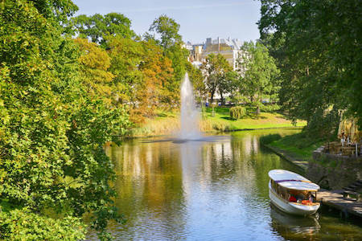
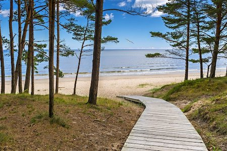

Useful phrases (Noderīgas frāzes)
| English |
Latvian |
| Hello |
Sveiki |
| Thanks |
Paldies |
| You're (very) welcome / Please |
Lūdzu |
| Good morning/day/night |
Labrīt / Labdien / Labvakar |
| I don't speak Latvian |
Es nerunāju latviski |
Food

Riga Central Market
Monday-Saturday: 8:00am-6:00pm, Sunday: 8:00am-5:00pm
- A large collection of marketplaces, set in a historic site with very old and pretty architecture.
- A good place to get cheap, fresh seafood for meals.
- Warning: You must be careful of pickpocketers! And if you are foreign you will probably be upsold.
Nationwide Song and Dance Celebration



Song and Dance Celebration
Cost: $$$ (in person), FREE (streaming) | Learn More
Next: July 2023
- The most important cultural event in Lativa; held every four years, the Song and Dance Celebration is a gathering
of 30,000 Latvians singing traditional songs in unison, wearing traditional Latvian garb.
- During occupations (especially Soviet) one of the few sanctioned group meetings were for choral gatherings.
Here, singing traditional Latvian songs kept pride in and love for Latvia strong, and also allowed men and women
to covertly pass information about the status of their hometowns.
- I have never seen this live, but I've watched the stream, and cried; it is incredible to hear that many voices
singing the songs of my grandparents and their ancestors. I WILL go one day, and you should too, although tickets
are very expensive and sell very quickly.
Favorite Spots

City Canal
- Formerly an old moat, Riga's City Canal is now a favorite spot for leisure.
- Banked on either side by lovely stretches of green and tall trees, this spot of nature offers a refuge from city bustle.
- I have loved sitting near the canal and having picnics with my family; you will too!

The Beach
Cost: 0 [car], $ [train] | More Info
- A quick train ride--or car ride--out of Riga will take you to lovely sands in Jūrmala on the Gulf of Riga.
- You can easily find little pieces of amber scattered among the shells.
- It is very cold, even in the summer--be ready and bring towels!
Contact Me
Send me any questions you have (I will respond in English, or Latvian if selected)!